Convolutional Networks: Shared Filters, Position and Pixel Relevance
Abstract
Classify an image while learning local features that can be reused across its spatial positions. Shared convolution weights reduce parameter count, but a prediction can still depend on where the resulting features appear. We derive the shared computation and gradient, fit a small tensor CNN on noisy bars, and compare local pooling, global pooling and a dense baseline on shifted positions. Learned filters, actual confusion matrices and signed relevance redistributions expose both successes and limits. An initialized-weight relevance control checks the temptation to equate a bright heatmap with a faithful explanation, and a separate original-MNIST example trains and evaluates the same kind of network. Every fit is an explicit tensor optimizer loop in the complete C++ programs.
One shared kernel and its summed gradient
Consider a single-channel 3×3 image and a 2×2 diagonal kernel. The same two unit weights are applied to four overlapping image patches, giving the raw cross-correlation map [[2,5],[0,2]]. It is cross-correlation because the kernel is not flipped. For the sum of these four raw outputs, each kernel derivative sums all input pixels occupying that offset across the four patches. The result [[4,6],[3,5]] is measured below by tensor autodiff.
This derivative is for the sum of raw correlations. ReLU and max-pooling have their own derivative rules: ReLU blocks nonpositive preactivations under this library's convention, and max-pooling routes to the first maximum in each window. The example's pooled value is five, but its pooled derivative would therefore follow one winning location rather than all four locations.
#include <dm/dm.hpp>
int main() {
namespace n=dm::nn;
std::filesystem::create_directories("build");
const auto image=n::tensor({1,2,0,0,1,3,2,0,1},{1,3,3,1},n::DType::Float64);
auto kernel=n::tensor({1,0,0,1},{2,2,1,1},n::DType::Float64);kernel.requires_grad_();
n::Conv2DOptions options;options.padding=n::Padding::Valid;
const auto raw=n::conv2d(image,kernel,options);
const auto pooled=n::max_pool2d(n::relu(raw),2,2);
const auto derivative=n::grad(n::sum(raw),{kernel})[0];
std::print("| actual tensor quantity | row-major values |\n| :--- | :--- |\n| raw shared correlations | {} |\n| derivative of raw-output sum with respect to kernel | {} |\n| ReLU then max-pool | {} |\n",raw.to_vector<double>(),derivative.to_vector<double>(),pooled.to_vector<double>());
dm::graphics::Diagram diagram(60,1100);
dm::graphics::DiagramNodeStyle node;node.width=4.6;node.height=2.9;node.font_size=20;
diagram.node("input",{0,0},"Input [1,3,3,1]\n1 2 0\n0 1 3\n2 0 1",node)
.node("kernel",{6.2,0},"One shared 2x2 kernel\n1 0\n0 1\nVALID, stride one",node);
const auto values=raw.to_vector<double>();node.fill={220,252,231};
diagram.node("map",{12.4,0},std::format("Raw map [1,2,2,1]\n{:.0f} {:.0f}\n{:.0f} {:.0f}\nsum {:.0f}",values[0],values[1],values[2],values[3],n::sum(raw).item()),node)
.edge("input","kernel","patches").edge("kernel","map","slide")
.text({6.2,3},"Shared weights sum contributions from every application",23)
.text({6.2,-3},std::format("Actual d(sum raw)/d(kernel) = {}",derivative.to_vector<double>()),20)
.save_svg("build/cnn_shared_kernel.svg");
const auto before=n::tensor({0,1,0,0},{1,1,4,1}),shifted=n::tensor({0,0,1,0},{1,1,4,1});
std::print("\nA one-cell shift across a stride-two boundary changes local maxima: {} -> {}.\n",n::max_pool2d(before,{1,2},{1,2}).to_vector<float>(),n::max_pool2d(shifted,{1,2},{1,2}).to_vector<float>());
}| actual tensor quantity | row-major values |
|---|---|
| raw shared correlations | [2, 5, 0, 2] |
| derivative of raw-output sum with respect to kernel | [4, 6, 3, 5] |
| ReLU then max-pool | [5] |
A one-cell shift across a stride-two boundary changes local maxima: [1, 0] -> [0, 1].
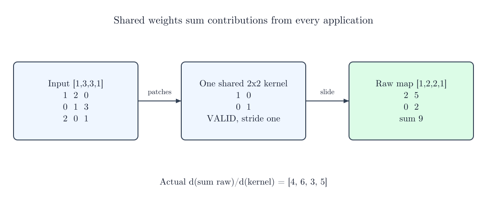
The network and the position information its head retains
For NHWC input X and HWIO kernel W, stride-one valid cross-correlation is
A k×k convolution with C input and F output channels learns k²CF+F scalars, independent of image height and width. Its kernel derivative sums upstream errors times the corresponding input pixels over the batch and spatial sites. For the error signal Δ at the raw convolution output, that shared derivative is
ReLU produces max(0,Z). Local p×p max-pooling with stride p reduces the map while retaining a grid of spatial positions; flattening then gives the dense head a separate input coordinate for every retained position.
Global max-pooling keeps one maximum per channel. Permuting the spatial sites of a feature map cannot change these maxima, so any following deterministic head sees the same vector. This is a property of the feature map, not every finite image translation. Valid-convolution boundaries can change which patches exist, noise changes the maps, and local strided pooling depends on grid phase. The explicit one-cell shift above disproves the original claim that any shift smaller than a local pool window must leave the pooled result unchanged.
The main bar model has eight valid 3×3 filters, ReLU, local 2×2 pooling, flattening, a 32-unit ReLU hidden layer and two logits: 6,578 learned scalars. The shifted-position comparison uses a 16-unit hidden layer in both CNNs, giving 3,330 local-pooling or 258 global-pooling scalars. Its dense baseline uses 32 hidden units over all 144 pixels, giving 4,706 scalars. All models initialize convolution/hidden weights with He uniform, output weights with Glorot uniform and biases with zero; these tensor initializations and explicit fits are not numerical reproductions of the old constructor-trained wrapper. The main CNN's 80 convolution scalars are a small part of its total: the flatten-to-hidden layer alone learns 6,432. Its 6,578 scalars exceed the dense baseline's 4,706. Sharing a small kernel does not guarantee a smaller complete network when a position-sensitive dense head dominates the parameter count.
The executed diagrams below probe the exact four forward configurations. They do not train or restore a checkpoint. Named stages retain all dependencies; the forward also retains integer max-pool winners for attribution, separately from learned weights. Flow glyphs use shared linear spatial/channel scales, excluding batch size, with a one-pixel visibility floor. Labels rotate 90 degrees; wide diagrams remain scrollable on the website. Parameter counts come from actual traced leaves rather than labels copied onto a schematic.
#include <dm/dm.hpp>
int main() {
namespace n=dm::nn;namespace m=n::models;n::set_num_threads(2);
std::filesystem::create_directories("build");std::filesystem::create_directories("figures");
const std::vector<std::string> files{"cnn_main_architecture.svg","cnn_local_architecture.svg","cnn_global_architecture.svg","cnn_dense_architecture.svg"};
const std::vector<std::string> names{"Main local CNN: hidden 32","Shift local CNN: hidden 16","Shift global CNN: hidden 16","Flattened dense baseline"};
std::print("| actual configuration | traced learned scalars | store learned scalars |\n| :--- | ---: | ---: |\n");
for(const int variant:{1,2,3,0}) {
n::ParameterStore p(1);m::SmallImageCnnConfig config;config.hidden=variant==0?32:16;config.global_pool=variant==2;
n::Module model([&](const n::Tensor& image) {
if(variant==3)return m::DenseImageBaseline(p,image);
const auto out=m::SmallImageCnn(p,image,config);
n::model_stage("Shared VALID 3x3",image,out.conv_pre);
n::model_stage("ReLU",out.conv_pre,out.conv_relu);
n::model_stage(config.global_pool?"Full-map max":"Local max 2x2",out.conv_relu,out.pooled);
n::model_stage("Flatten pooled map",out.pooled,out.flat);
n::model_stage("Dense hidden ReLU",out.flat,out.hidden);
n::model_stage("Two raw logits",out.hidden,out.logits);
return out.logits;
},names[variant]);
n::ModelPlotOptions options;options.title=names[variant];options.style=n::ModelPlotStyle::Flow;options.detail=n::ModelPlotDetail::Blocks;
options.labels.type=n::ModelPlotLabel::Full;options.labels.size=13;options.labels.wrap=28;
options.sizing.spatial_scale=n::ModelPlotScale::Linear;options.sizing.channel_scale=n::ModelPlotScale::Linear;options.sizing.minimum_extent=1;
options.spacing.layer=48;options.spacing.lane=48;
const auto picture=model.plot(n::zeros({1,12,12,1}),options);
picture.save_svg("build/"+files[variant]);
if(variant)std::filesystem::copy_file("build/"+files[variant],"figures/"+files[variant],std::filesystem::copy_options::overwrite_existing);
std::print("| {} | {} | {} |\n",names[variant],picture.parameter_count(),p.count());
if(picture.parameter_count()!=p.count())return 1;
}
}| actual configuration | traced learned scalars | store learned scalars |
|---|---|---|
| Shift local CNN: hidden 16 | 3330 | 3330 |
| Shift global CNN: hidden 16 | 258 | 258 |
| Flattened dense baseline | 4706 | 4706 |
| Main local CNN: hidden 32 | 6578 | 6578 |
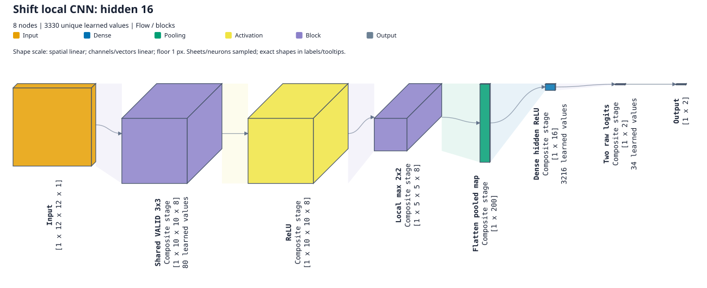
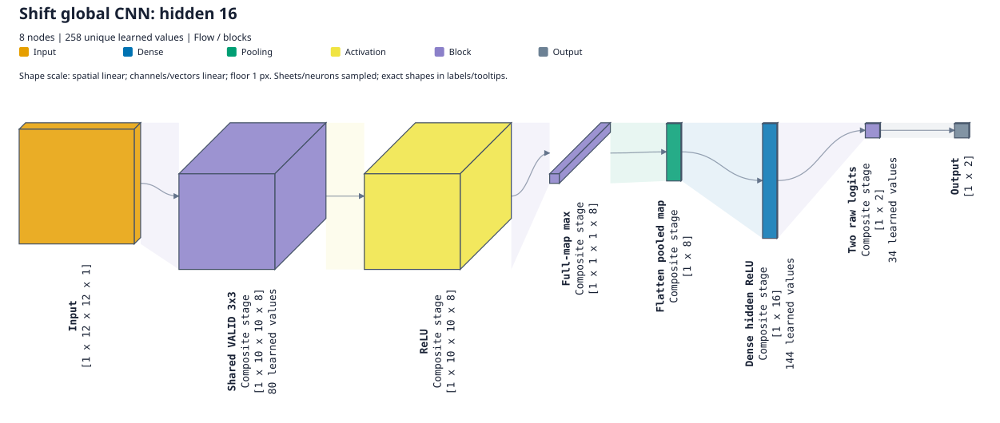
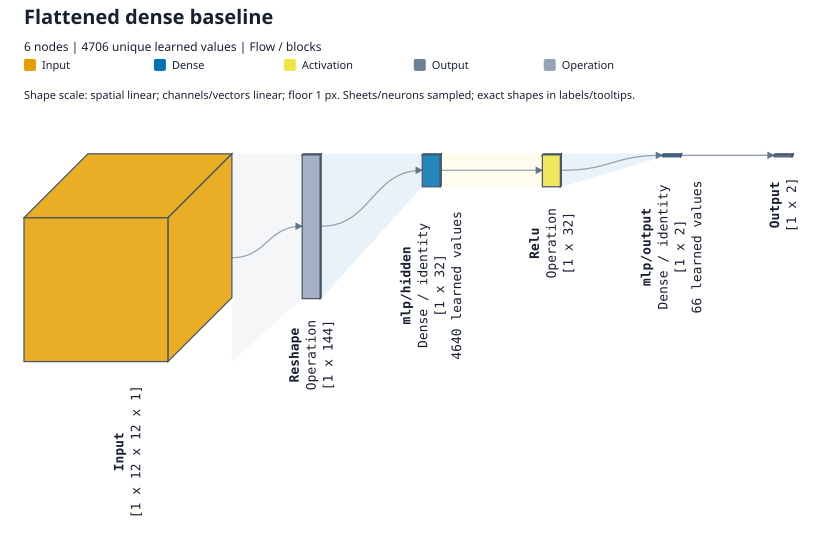
The original noisy bars and a held-out split
The native generator makes 600 square 12×12 images: 300 horizontal bars (class 0) and 300 vertical bars (class 1), alternating in original row order. Each thickness-two bar spans the full other axis. Its first row or column is uniform over 0..10; independent Gaussian pixel noise has standard deviation 0.08 and intensities are clipped to [0,1]. A separately stored noiseless mask retains the true object even when a noisy pixel crosses an intensity threshold.
Seed 20240815, per-image normal-distribution construction, draw order and the post-generation shuffle preserve the original report's data stream on this standard-library implementation. Distribution/shuffle mappings need not be bitwise identical across standard libraries. The first 420 shuffled rows are fitting data and the remaining 180 are held out. This split does not select hyperparameters or an epoch. Original row ids remain available for inspection. The generator's double-valued draws are stored as Float32 tensor pixels; all fits use Float32 parameters and computation. The earlier hand check uses Float64.
#include <dm/dm.hpp>
int main() {
namespace n=dm::nn;
std::filesystem::create_directories("build");
const auto data=n::make_bar_images(300);
const std::vector<std::int64_t> fit(data.shuffled_rows.begin(),data.shuffled_rows.begin()+420),
test(data.shuffled_rows.begin()+420,data.shuffled_rows.end());
std::print("| partition | observations | horizontal | vertical |\n| :--- | ---: | ---: | ---: |\n");
for(int part=0;part<2;++part) {
const auto& rows=part?test:fit;const auto y=n::take_rows(data.labels,rows);
const auto horizontal=n::sum(n::cast(n::equal(y,0),n::DType::Int64)).item();
std::print("| {} | {} | {:.0f} | {:.0f} |\n",part?"held out":"fitting",rows.size(),horizontal,rows.size()-horizontal);
}
const auto classes=data.labels.to_vector<std::int64_t>();
std::vector<std::int64_t> selected;std::vector<std::string> labels;
for(int part=0;part<2;++part)for(int i=0;i<4;++i) {
const auto row=(part?test:fit)[i];selected.push_back(row);
labels.push_back(std::format("{} #{} {}",part?"test":"fit",row,classes[row]?"V":"H"));
}
auto picture=n::diagram_tensor_images(n::take_rows(data.images,selected),4,labels);
picture.text({27,4},"Fitting inputs above, held-out inputs below",21)
.save_svg("build/cnn_bar_inputs.svg");
std::print("\nActual image tensor {}; true object pixels per image: {}.\n",data.images.shape(),n::sum(n::take_rows(data.object_mask,{0}),{1,2,3}).item());
}| partition | observations | horizontal | vertical |
|---|---|---|---|
| fitting | 420 | 213 | 207 |
| held out | 180 | 87 | 93 |
Actual image tensor [600, 12, 12, 1]; true object pixels per image: 24.
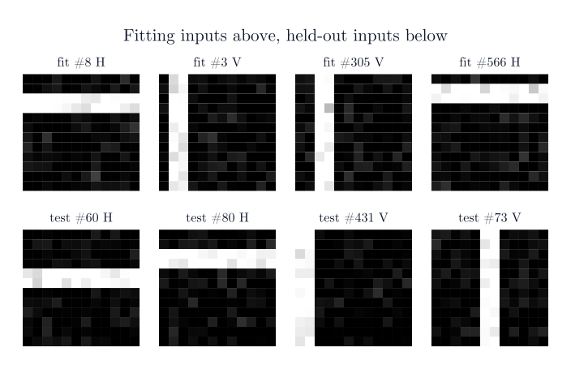
Softmax, cross-entropy and an explicit tensor fit
For logits s and true class y, stable softmax cross-entropy is
The native fused loss evaluates the log-sum-exp stably. Autodiff propagates this error through both dense maps, ReLU, the actual maximum-pool winners and the shared convolution. At a kernel offset, contributions from every application are added. The earlier raw-correlation example isolates that sharing; a full loss also includes all subsequent nonlinear and pooling derivatives.
The program below creates all six learned leaves before constructing the optimizer, then visibly performs every SGD update. Learning rate is 0.05, model/batch-order seeds are one, minibatch size is 16, and the epoch count is fixed at 40. There is no L2 penalty, augmentation or early stopping. Initial and final parameters are saved for the following filter and attribution checks.
The plotted loss is the sample-weighted mean of actual preupdate minibatch losses during each epoch. Because parameters change between batches, this is not a final fixed-model whole-dataset loss. Test data are evaluated after the last update. The confusion matrix uses actual predictions, with true classes in rows and predicted classes in columns.
#include <dm/dm.hpp>
int main() {
namespace n=dm::nn;namespace m=n::models;n::set_num_threads(2);
std::filesystem::create_directories("build");std::filesystem::create_directories("figures");
const auto data=n::make_bar_images(300);
const std::vector<std::int64_t> fit(data.shuffled_rows.begin(),data.shuffled_rows.begin()+420),
test(data.shuffled_rows.begin()+420,data.shuffled_rows.end());
const auto fit_x=n::take_rows(data.images,fit),fit_y=n::take_rows(data.labels,fit),
test_x=n::take_rows(data.images,test),test_y=n::take_rows(data.labels,test);
n::ParameterStore p(1);m::SmallImageCnnConfig config;
{ n::NoGradGuard guard;(void)m::SmallImageCnn(p,n::take_rows(fit_x,{0}),config); }
p.save("build/cnn_initial.npz");
n::OptimizerConfig rule;rule.kind=n::OptimizerKind::Sgd;
n::Optimizer optimizer(p,.05,rule);n::BatchOrder batches(fit.size(),16,1);
std::vector<double> epoch,mean_nll;std::size_t updates=0;
std::print("| epoch | sample-weighted preupdate minibatch NLL |\n| ---: | ---: |\n");
for(int e=0;e<40;++e) {
batches.begin_epoch();n::WeightedMean average;
for(auto rows=batches.next();!rows.empty();rows=batches.next()) {
const auto logits=m::SmallImageCnn(p,n::take_rows(fit_x,rows),config).logits;
const auto loss=n::sparse_softmax_cross_entropy(logits,n::take_rows(fit_y,rows));
optimizer.minimize(loss);++updates;average.add(loss.item(),rows.size());
}
epoch.push_back(e+1);mean_nll.push_back(average.value());
if(e==0 || (e+1)%10==0)std::print("| {} | {:.9f} |\n",e+1,average.value());
}
p.save("build/cnn_bars.npz");
n::NoGradGuard guard;
const auto scores=m::SmallImageCnn(p,test_x,config).logits;
n::ConfusionMatrix confusion(2);confusion.add(test_y,n::argmax(scores,1));
n::ConfusionMatrixPlotOptions matrix;matrix.labels={"horizontal","vertical"};matrix.title="Held-out noisy bars: actual predictions";
confusion.save_svg("build/cnn_bars_confusion.svg",matrix);
std::filesystem::copy_file("build/cnn_bars_confusion.svg","figures/cnn_bars_confusion.svg",std::filesystem::copy_options::overwrite_existing);
std::print("\nLearned scalars {}; learned leaves {}; actual optimizer calls {}.\nFitting accuracy {:.6f}; held-out accuracy {:.6f}; held-out NLL {:.9f}.\n",p.count(),p.parameters().size(),updates,n::accuracy(m::SmallImageCnn(p,fit_x,config).logits,fit_y),confusion.accuracy(),n::sparse_softmax_cross_entropy(scores,test_y).item());
auto plot=dm::graphics::RPlot::create();
plot.line(epoch,mean_nll,"batch loss",{37,99,235},2).legend({"SGD batch mean"},{{37,99,235}})
.title("Actual sample-weighted minibatch loss by epoch")
.x_label("completed epoch").y_label("mean cross-entropy")
.x_limits(1,40).y_limits(0,.45).save_svg("build/cnn_loss.svg");
}| epoch | sample-weighted preupdate minibatch NLL |
|---|---|
| 1 | 0.380266650 |
| 10 | 0.007534685 |
| 20 | 0.002610920 |
| 30 | 0.001474122 |
| 40 | 0.000990407 |
Learned scalars 6578; learned leaves 6; actual optimizer calls 1080. Fitting accuracy 1.000000; held-out accuracy 1.000000; held-out NLL 0.001124526.
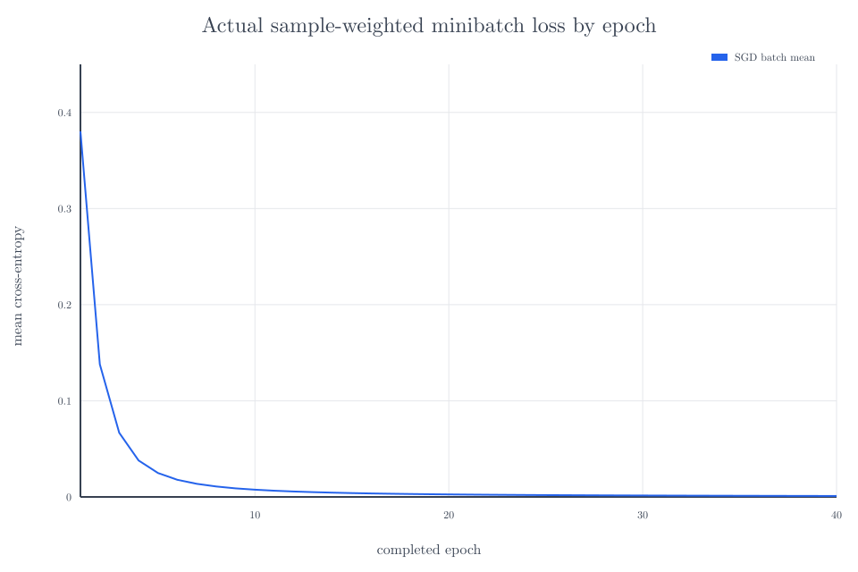
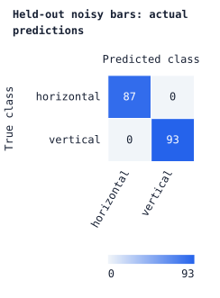
This deliberately easy, low-noise task reaches perfect accuracy on this held-out split. It is a result for one generated dataset, initialization and training schedule, not a natural-image benchmark or proof of positional generalization. The next experiments keep those distinctions visible.
The learned filters, on one shared signed scale
A convolution kernel here has shape [3,3,1,8]. Reordering its axes gives eight 3×3 grayscale tiles. All tiles below use the same symmetric range [−M,+M], where M is the largest absolute learned coefficient; black is negative, mid-grey is zero and white is positive. Each filter is not independently rescaled. This makes differences in magnitude visible as well as pattern.
The figure displays actual learned values after the explicit fit. Local contrasts can be inspected, but an attractive pattern alone does not establish that a filter is a particular human-labelled edge detector or that it caused the model's predictions. The initial-to-final kernel difference confirms that these shared weights were updated, rather than supplied as fixed features.
#include <dm/dm.hpp>
int main() {
namespace n=dm::nn;namespace m=n::models;n::set_num_threads(2);
std::filesystem::create_directories("build");n::NoGradGuard guard;
n::ParameterStore trained(1),initial(1);const auto probe=n::zeros({1,12,12,1});
(void)m::SmallImageCnn(trained,probe);(void)m::SmallImageCnn(initial,probe);
trained.load("build/cnn_bars.npz");initial.load("build/cnn_initial.npz");
const auto weights=trained.at("cnn/conv/W");const auto maximum=n::max(n::abs(weights)).item();
const auto change=n::sqrt(n::sum(n::square(weights-initial.at("cnn/conv/W")))).item();
const auto tiles=n::transpose(weights,{3,0,1,2});std::vector<std::string> labels;
for(int f=0;f<8;++f)labels.push_back(std::format("filter {}",f));
auto picture=n::diagram_tensor_images(tiles,4,labels,-maximum,maximum,24);
picture.text({9,4},"Learned kernels: one shared signed colour scale",19)
.save_svg("build/cnn_filters.svg");
std::print("| learned kernel shape | common absolute colour limit M | initial-to-final kernel L2 difference |\n| :--- | ---: | ---: |\n| {} | {:.9f} | {:.9f} |\n",weights.shape(),maximum,change);
if(!(change>0))return 1;
}| learned kernel shape | common absolute colour limit M | initial-to-final kernel L2 difference |
|---|---|---|
| [3, 3, 1, 8] | 1.047696352 | 0.877755404 |
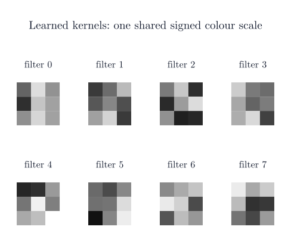
Signed relevance redistribution and an initialized-weight control
For finite nonnegative activations a, let W⁺=max(W,0). A stabilized dense z-plus redistribution of incoming relevance R is
The convolutional version uses the same positive kernel and its input adjoint:
The native explanation seeds the selected raw logit, including output bias, then redistributes through positive output, hidden and convolution connections. Denominators omit biases and negative weights. The actual recorded max-pool argmax scatters relevance back to the feature map; ties use the first maximum. ReLU is passed through using its nonnegative forward activations. Epsilon is 1e−9 here. No fit or gradient update occurs during this inspection.
This is a custom stabilized signed-logit adaptation of positive-connection LRP. A negative selected logit can give negative maps. Epsilon, zero positive paths and floating arithmetic mean relevance need not be exactly conserved. Bias credit is not assigned to a separate bias node. These maps are not ordinary input gradients, class probabilities, counterfactual effects or causal proofs. The table therefore reports actual selected scores, retained signed sums and residuals instead of assuming a conservation identity.
We select two held-out images per true class and compare trained weights with the saved initialized weights at exactly the same target classes. The mask fraction is sum(R|×true mask)/sum(|R); if absolute mass is zero it is missing (nan), not replaced by an invented floor. Bright input pixels enter the rule multiplicatively, so substantial concentration on the bar can occur before learning. The initialized-weight control tests that alternative explanation.
#include <dm/dm.hpp>
int main() {
namespace n=dm::nn;namespace m=n::models;n::set_num_threads(2);
std::filesystem::create_directories("build");std::filesystem::create_directories("figures");
n::NoGradGuard guard;const auto data=n::make_bar_images(300);
const auto truth=data.labels.to_vector<std::int64_t>();std::vector<std::int64_t> rows;
for(int category=0;category<2;++category) {
int count=0;
for(std::size_t i=420;i<data.shuffled_rows.size() && count<2;++i) {
const auto row=data.shuffled_rows[i];if(truth[row]==category){rows.push_back(row);++count;}
}
}
const auto input=n::take_rows(data.images,rows),mask=n::take_rows(data.object_mask,rows);
n::ParameterStore trained(1),initial(1);
(void)m::SmallImageCnn(trained,input);(void)m::SmallImageCnn(initial,input);
trained.load("build/cnn_bars.npz");initial.load("build/cnn_initial.npz");
const auto explanation=m::SmallImageCnnZPlus(trained,input);
const auto targets=explanation.target_ids.to_vector<std::int64_t>();
const auto control=m::SmallImageCnnZPlus(initial,input,targets);
const auto mass=n::sum(n::abs(explanation.input_relevance),{1,2,3}),
control_mass=n::sum(n::abs(control.input_relevance),{1,2,3});
const auto share=n::where(n::greater(mass,0),n::sum(n::abs(explanation.input_relevance)*mask,{1,2,3})/mass,std::numeric_limits<double>::quiet_NaN()).to_vector<float>();
const auto control_share=n::where(n::greater(control_mass,0),n::sum(n::abs(control.input_relevance)*mask,{1,2,3})/control_mass,std::numeric_limits<double>::quiet_NaN()).to_vector<float>();
const auto seed=n::sum(explanation.output_relevance,{1}).to_vector<float>(),retained=n::sum(explanation.input_relevance,{1,2,3}).to_vector<float>();
std::print("| original row | truth | fixed target | trained absolute mass on true bar | initial same-target fraction | selected logit | retained signed sum | score minus retained sum |\n| ---: | ---: | ---: | ---: | ---: | ---: | ---: | ---: |\n");
for(std::size_t i=0;i<rows.size();++i)std::print("| {} | {} | {} | {:.6f} | {:.6f} | {:.8f} | {:.8f} | {:.3e} |\n",rows[i],truth[rows[i]],targets[i],share[i],control_share[i],seed[i],retained[i],seed[i]-retained[i]);
const auto one=n::take_rows(input,{0});const auto horizontal=m::SmallImageCnnZPlus(trained,one,{0}),vertical=m::SmallImageCnnZPlus(trained,one,{1});
double contrast_scale=std::max(n::max(n::abs(horizontal.input_relevance)).item(),n::max(n::abs(vertical.input_relevance)).item());if(contrast_scale==0)contrast_scale=1;
const auto contrast=n::concat({one,.5+horizontal.input_relevance/(2*contrast_scale),.5+vertical.input_relevance/(2*contrast_scale)},0);
auto contrast_picture=n::diagram_tensor_images(contrast,3,{"input H","target H","target V"});
contrast_picture.text({20,4},"Signed class contrasts: one symmetric score scale",19)
.save_svg("build/cnn_relevance_contrast.svg");
std::filesystem::copy_file("build/cnn_relevance_contrast.svg","figures/cnn_relevance_contrast.svg",std::filesystem::copy_options::overwrite_existing);
std::print("\nContrast target H: raw score {:.8f}, signed pixel sum {:.8f}; target V: raw score {:.8f}, signed pixel sum {:.8f}.\n",n::sum(horizontal.output_relevance).item(),n::sum(horizontal.input_relevance).item(),n::sum(vertical.output_relevance).item(),n::sum(vertical.input_relevance).item());
double scale=std::max(n::max(n::abs(explanation.input_relevance)).item(),n::max(n::abs(control.input_relevance)).item());if(scale==0)scale=1;
const auto panels=n::concat({input,.5+explanation.input_relevance/(2*scale),.5+control.input_relevance/(2*scale)},0);
std::vector<std::string> labels;
for(auto row:rows)labels.push_back(std::format("input #{} {}",row,truth[row]?"V":"H"));
for(auto target:targets)labels.push_back(std::format("trained target {}",target));
for(auto target:targets)labels.push_back(std::format("initial target {}",target));
auto picture=n::diagram_tensor_images(panels,4,labels);
picture.text({27,4},"Inputs, trained relevance, initialized same-target control",19)
.save_svg("build/cnn_relevance.svg");
std::print("Shared map scale [-M,+M], M={:.9f}; zero maps are mid-grey.\n",scale);
}| original row | truth | fixed target | trained absolute mass on true bar | initial same-target fraction | selected logit | retained signed sum | score minus retained sum |
|---|---|---|---|---|---|---|---|
| 60 | 0 | 0 | 0.872749 | 0.858773 | 4.01692200 | 4.01692104 | 9.537e-07 |
| 80 | 0 | 0 | 0.852434 | 0.821410 | 3.01831913 | 3.01831937 | -2.384e-07 |
| 431 | 1 | 1 | 0.873471 | 0.677513 | 2.60575557 | 2.60575604 | -4.768e-07 |
| 73 | 1 | 1 | 0.928458 | 0.890452 | 3.68172336 | 3.68172312 | 2.384e-07 |
Contrast target H: raw score 4.01692200, signed pixel sum 4.01692104; target V: raw score -2.91478539, signed pixel sum -2.91478467. Shared map scale [-M,+M], M=0.380705118; zero maps are mid-grey.
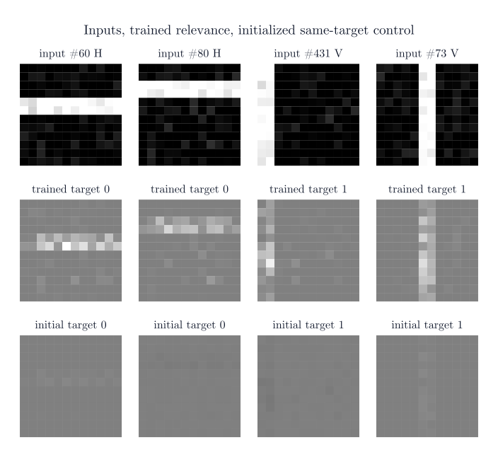
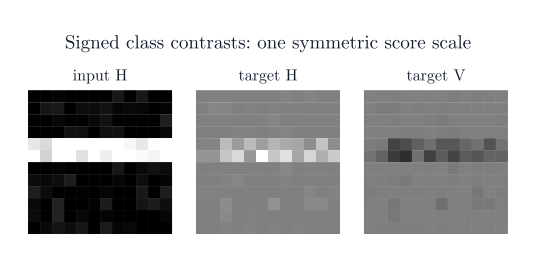
A high on-bar fraction in both trained and initialized models limits what this check establishes. It shows where this rule allocates absolute score mass; it does not by itself show that learning discovered the causal object, that a particular pixel intervention would change the decision, or that the relevance map faithfully summarizes all negative and bias contributions. Shared raw-score scales also make the initialized maps visually weaker when their seed logits are smaller; independently normalizing every map would conceal that difference.
Training early positions, testing late positions
Now fitting bars start only at rows or columns 0..3, while held-out bars start at 8..10. These are full-width horizontal or full-height vertical bars, not small objects moving diagonally from a top-left corner. Each split has 250 examples per class, with independent generation seeds seven and eight. The three models share the same observations. Both CNNs use sixteen hidden units; the dense baseline uses thirty-two. All use explicit SGD at 0.05 and batch size sixteen. CNNs run forty epochs and the dense baseline runs two hundred, preserving the original comparison's unequal optimization budgets.
This tests this particular positional distribution shift, not universal translation invariance. Finite valid-convolution boundaries and independent noise can change the set of feature responses even with global pooling. Global max exactly forgets spatial arrangement of a given feature map; it does not repair all boundary or representation changes in an input image.
#include <dm/dm.hpp>
int main() {
namespace n=dm::nn;namespace m=n::models;n::set_num_threads(2);
std::filesystem::create_directories("build");std::filesystem::create_directories("figures");
n::BarImageOptions positions;positions.min_position=0;positions.max_position=3;
const auto fit=n::make_bar_images(250,7,positions);
positions.min_position=8;positions.max_position=10;const auto test=n::make_bar_images(250,8,positions);
const std::vector<std::string> names{"local CNN","global CNN","dense baseline"},files{"cnn_shift_local_confusion.svg","cnn_shift_global_confusion.svg","cnn_shift_dense_confusion.svg"};
std::print("| model | learned scalars | epochs | actual optimizer calls | fit accuracy | shifted accuracy | shifted NLL |\n| :--- | ---: | ---: | ---: | ---: | ---: | ---: |\n");
for(const int model:{0,2,1}) {
m::SmallImageCnnConfig config;config.hidden=16;config.global_pool=model==1;
n::ParameterStore p(1);
auto forward=[&](const n::Tensor& image) {
return model==2?m::DenseImageBaseline(p,image,32,2):m::SmallImageCnn(p,image,config).logits;
};
{ n::NoGradGuard guard;(void)forward(n::take_rows(fit.images,{0})); }
n::OptimizerConfig rule;rule.kind=n::OptimizerKind::Sgd;
n::Optimizer optimizer(p,.05,rule);n::BatchOrder batches(500,16,1);
const int epochs=model==2?200:40;std::size_t updates=0;
for(int e=0;e<epochs;++e) {
batches.begin_epoch();
for(auto rows=batches.next();!rows.empty();rows=batches.next()) {
const auto loss=n::sparse_softmax_cross_entropy(forward(n::take_rows(fit.images,rows)),n::take_rows(fit.labels,rows));
optimizer.minimize(loss);++updates;
}
}
n::NoGradGuard guard;const auto scores=forward(test.images);
n::ConfusionMatrix confusion(2);confusion.add(test.labels,n::argmax(scores,1));
n::ConfusionMatrixPlotOptions options;options.labels={"horizontal","vertical"};options.title=names[model]+": actual shifted-position predictions";
confusion.save_svg("build/"+files[model],options);
if(model!=1)std::filesystem::copy_file("build/"+files[model],"figures/"+files[model],std::filesystem::copy_options::overwrite_existing);
std::print("| {} | {} | {} | {} | {:.6f} | {:.6f} | {:.9f} |\n",names[model],p.count(),epochs,updates,n::accuracy(forward(fit.images),fit.labels),confusion.accuracy(),n::sparse_softmax_cross_entropy(scores,test.labels).item());
}
}| model | learned scalars | epochs | actual optimizer calls | fit accuracy | shifted accuracy | shifted NLL |
|---|---|---|---|---|---|---|
| local CNN | 3330 | 40 | 1280 | 1.000000 | 0.000000 | 4.924688339 |
| dense baseline | 4706 | 200 | 6400 | 1.000000 | 0.000000 | 4.392644882 |
| global CNN | 258 | 40 | 1280 | 1.000000 | 0.846000 | 0.316169739 |
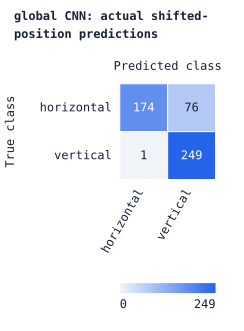
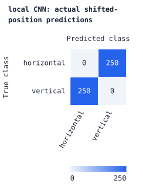
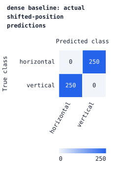
On this fixed run, all three fitting accuracies are one. Global pooling reaches 84.6% on the shifted test; local pooling and the dense head reach zero. That ranking supports the value of discarding position for this generated task. It is not a guarantee for other seeds, image transformations or tasks where spatial arrangement contains the label. It also does not make global pooling perfectly invariant to the finite noisy image transformations used here.
Original MNIST digits with verified native acquisition
The final experiment uses original 28×28 MNIST grayscale digits. Native fetch obtains the standard files; fetch_file verifies the four compressed resources against their published MD5 pins, including cached sources. The program then reads those exact verified gzip IDX files through native read_idx, casts pixels to Float32 and divides original bytes by 255. It does not trust an unrelated unverified plain-file cache in place of those verified sources. The resource names and digests agree with the official torchvision MNIST source definitions; torchvision is a provenance reference, not an execution dependency. No Python data-preparation step is involved.
Training uses original training-file rows 0..511, validation uses training rows 512..639, and final evaluation uses official-test rows 0..255. Those small fixed prefixes are disjoint by source and role but are not representative full-dataset benchmark samples. The model is the same default eight-filter local CNN with ten output logits, now learning 43,706 scalars because the 26×26 convolution map yields a larger flattened head. Six epochs of Adam at 0.001 and batch size 32 give 96 explicit updates. Model and batch-order seeds are eleven. The lowest validation cross-entropy selects a checkpoint; o official-test score participates in selection.
The executed architecture and actual source-image preview are saved alongside the loss and test confusion. This example's digit accuracy is an illustrative small-prefix result, not a claim about the usual full MNIST benchmark.
#include <dm/dm.hpp>
int main() {
namespace n=dm::nn;namespace m=n::models;n::set_num_threads(2);
std::filesystem::create_directories("build");std::filesystem::create_directories("figures");
const auto directory=std::filesystem::path(dm::datasets::fetch("mnist"));
const std::vector<std::pair<std::string,std::string>> sources{
{"train-images-idx3-ubyte.gz","f68b3c2dcbeaaa9fbdd348bbdeb94873"},
{"train-labels-idx1-ubyte.gz","d53e105ee54ea40749a09fcbcd1e9432"},
{"t10k-images-idx3-ubyte.gz","9fb629c4189551a2d022fa330f9573f3"},
{"t10k-labels-idx1-ubyte.gz","ec29112dd5afa0611ce80d1b7f02629c"}};
std::print("| verified compressed source | MD5 |\n| :--- | :--- |\n");
for(const auto& [file,digest]:sources) {
dm::datasets::fetch_file("https://ossci-datasets.s3.amazonaws.com/mnist/"+file,(directory/file).string(),digest,0,"mnist");
std::print("| {} | {} |\n",file,digest);
}
const auto training_x=n::reshape(n::cast(n::read_idx((directory/"train-images-idx3-ubyte.gz").string()),n::DType::Float32),{60000,28,28,1})/255.;
const auto training_y=n::cast(n::read_idx((directory/"train-labels-idx1-ubyte.gz").string()),n::DType::Int64);
const auto official_x=n::reshape(n::cast(n::read_idx((directory/"t10k-images-idx3-ubyte.gz").string()),n::DType::Float32),{10000,28,28,1})/255.;
const auto official_y=n::cast(n::read_idx((directory/"t10k-labels-idx1-ubyte.gz").string()),n::DType::Int64);
const auto fit_x=n::slice_axis(training_x,0,0,512),fit_y=n::slice_axis(training_y,0,0,512),
validation_x=n::slice_axis(training_x,0,512,640),validation_y=n::slice_axis(training_y,0,512,640),
test_x=n::slice_axis(official_x,0,0,256),test_y=n::slice_axis(official_y,0,0,256);
m::SmallImageCnnConfig config;config.classes=10;n::ParameterStore p(11);
n::Module model([&](const n::Tensor& image) {
const auto out=m::SmallImageCnn(p,image,config);
n::model_stage("Shared VALID 3x3",image,out.conv_pre);
n::model_stage("ReLU",out.conv_pre,out.conv_relu);
n::model_stage("Local max 2x2",out.conv_relu,out.pooled);
n::model_stage("Flatten pooled map",out.pooled,out.flat);
n::model_stage("Dense 32 ReLU",out.flat,out.hidden);
n::model_stage("Ten digit logits",out.hidden,out.logits);return out.logits;
},"Executed small MNIST CNN");
n::ModelPlotOptions architecture;architecture.title="Small MNIST CNN: actual 28x28 forward";
architecture.labels.type=n::ModelPlotLabel::Full;architecture.labels.wrap=28;architecture.sizing.minimum_extent=1;
const auto picture=model.plot(n::zeros({1,28,28,1}),architecture);
picture.save_svg("build/cnn_mnist_architecture.svg");
std::filesystem::copy_file("build/cnn_mnist_architecture.svg","figures/cnn_mnist_architecture.svg",std::filesystem::copy_options::overwrite_existing);
if(picture.parameter_count()!=43706 || p.count()!=43706)return 1;
n::OptimizerConfig rule;rule.kind=n::OptimizerKind::Adam;
n::Optimizer optimizer(p,.001,rule);n::BatchOrder batches(512,32,11);
double best=std::numeric_limits<double>::infinity();int best_epoch=0;std::size_t updates=0;
std::vector<double> epoch,training_nll,validation_nll;
std::print("\n| epoch | training preupdate batch NLL | validation NLL | validation accuracy |\n| ---: | ---: | ---: | ---: |\n");
for(int e=0;e<6;++e) {
batches.begin_epoch();n::WeightedMean average;
for(auto rows=batches.next();!rows.empty();rows=batches.next()) {
const auto loss=n::sparse_softmax_cross_entropy(m::SmallImageCnn(p,n::take_rows(fit_x,rows),config).logits,n::take_rows(fit_y,rows));
optimizer.minimize(loss);++updates;average.add(loss.item(),rows.size());
}
n::NoGradGuard guard;const auto scores=m::SmallImageCnn(p,validation_x,config).logits;
const double value=n::sparse_softmax_cross_entropy(scores,validation_y).item();
epoch.push_back(e+1);training_nll.push_back(average.value());validation_nll.push_back(value);
std::print("| {} | {:.6f} | {:.6f} | {:.6f} |\n",e+1,average.value(),value,n::accuracy(scores,validation_y));
if(value<best){best=value;best_epoch=e+1;p.save("build/cnn_mnist_best.npz");}
}
p.load("build/cnn_mnist_best.npz");n::NoGradGuard guard;
const auto test_scores=m::SmallImageCnn(p,test_x,config).logits;
n::ConfusionMatrix confusion(10);confusion.add(test_y,n::argmax(test_scores,1));
n::ConfusionMatrixPlotOptions matrix;matrix.title="MNIST: actual official-test rows 0..255";
confusion.save_svg("build/cnn_mnist_confusion.svg",matrix);
std::filesystem::copy_file("build/cnn_mnist_confusion.svg","figures/cnn_mnist_confusion.svg",std::filesystem::copy_options::overwrite_existing);
const auto digit_labels=n::slice_axis(test_y,0,0,10).to_vector<std::int64_t>();std::vector<std::string> labels;
for(int i=0;i<10;++i)labels.push_back(std::format("test #{} true {}",i,digit_labels[i]));
auto samples=n::diagram_tensor_images(n::slice_axis(test_x,0,0,10),5,labels,0,1,6);
samples.text({74,4},"Original official-test images: source rows 0..9",20).save_svg("build/cnn_mnist_inputs.svg");
std::filesystem::copy_file("build/cnn_mnist_inputs.svg","figures/cnn_mnist_inputs.svg",std::filesystem::copy_options::overwrite_existing);
std::print("\nLearned scalars {}; actual Adam calls {}; selected epoch {}.\nOfficial-test prefix size {}; accuracy {:.6f}; NLL {:.9f}.\n",p.count(),updates,best_epoch,test_y.numel(),confusion.accuracy(),n::sparse_softmax_cross_entropy(test_scores,test_y).item());
auto plot=dm::graphics::RPlot::create();
plot.line(epoch,training_nll,"train",{37,99,235},2).line(epoch,validation_nll,"validation",{234,88,12},2)
.legend({"train batches","validation"},{{37,99,235},{234,88,12}})
.title("Small MNIST fit and held-out validation loss")
.x_label("completed epoch").y_label("mean cross-entropy")
.x_limits(1,6).y_limits(0,2.1).save_svg("build/cnn_mnist_loss.svg");
}| verified compressed source | MD5 |
|---|---|
| train-images-idx3-ubyte.gz | f68b3c2dcbeaaa9fbdd348bbdeb94873 |
| train-labels-idx1-ubyte.gz | d53e105ee54ea40749a09fcbcd1e9432 |
| t10k-images-idx3-ubyte.gz | 9fb629c4189551a2d022fa330f9573f3 |
| t10k-labels-idx1-ubyte.gz | ec29112dd5afa0611ce80d1b7f02629c |
| epoch | training preupdate batch NLL | validation NLL | validation accuracy |
|---|---|---|---|
| 1 | 1.764959 | 1.385005 | 0.617188 |
| 2 | 0.891145 | 0.981929 | 0.703125 |
| 3 | 0.555961 | 0.797721 | 0.796875 |
| 4 | 0.414919 | 0.731661 | 0.804688 |
| 5 | 0.316991 | 0.670927 | 0.781250 |
| 6 | 0.251366 | 0.622687 | 0.820312 |
Learned scalars 43706; actual Adam calls 96; selected epoch 6. Official-test prefix size 256; accuracy 0.875000; NLL 0.470218867.
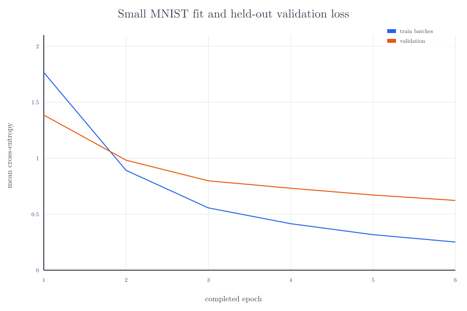
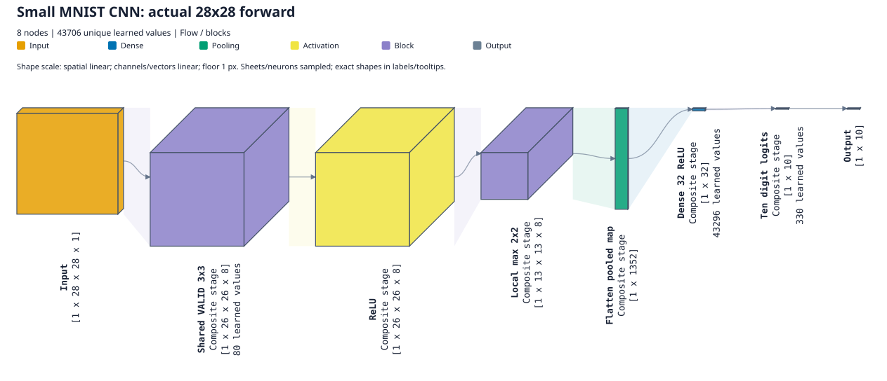
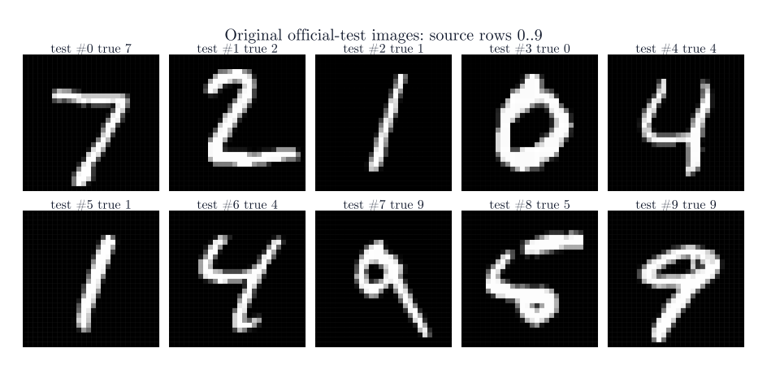
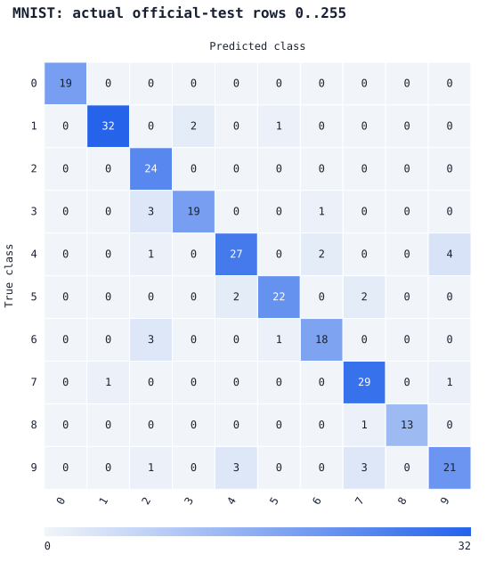
Checks, interpretation and limits
The native implementation separates reusable data generation and model forwards from every visible fitting loop. Its 21 new cases pass address and undefined- behaviour sanitizers, alongside eight legacy CNN regressions and five directory cases. Hand-computed forward values and shared-kernel derivatives, central finite differences for every learned value, an independent convolutional redistribution oracle, original RNG-stream equality, pooling counterexamples, parameter counts, actual architecture traces, square image cells, signed seeds, zero positive paths, input/range checks and preserved gradient state are tested. All 62 affected definitions, fourteen compiled documentation examples and four representative hovers pass. These are numerical and API checks, not a proof of universal generalization or explanatory faithfulness.
The random-position bars are learned successfully on this split. Shifted positions expose the location dependence of flattening; global max helps here, with a finite-boundary/noise limit that its exact feature-map permutation identity cannot remove. Learned filters really changed, but their appearance alone does not identify their semantic role. The initialized-weight relevance control and signed class contrast limit the earlier claim that on-object heatmaps establish the model's causal reasons. Finally, a small original-MNIST fit shows the same tensor workflow on real digit images while retaining the source, split, checkpoint-selection and sample-size qualifications.
References
- Y. LeCun, L. Bottou, Y. Bengio and P. Haffner (1998), Gradient-based learning applied to document recognition, Proceedings of the IEEE 86(11), 2278–2324, https://doi.org/10.1109/5.726791. The networks here are custom small ReLU classifiers, not LeNet-5 or pretrained paper models.
- S. Bach et al. (2015), On Pixel-Wise Explanations for Non-Linear Classifier Decisions by Layer-Wise Relevance Propagation, PLOS ONE 10(7), e0130140, https://doi.org/10.1371/journal.pone.0130140.
- G. Montavon et al. (2017), Explaining nonlinear classification decisions with deep Taylor decomposition, Pattern Recognition 65, 211–222, https://doi.org/10.1016/j.patcog.2016.11.008. The report uses a stabilized signed-logit adaptation with explicit limits, not an exact conservation claim.
- Official torchvision MNIST resource names, mirror and digest definitions: https://raw.githubusercontent.com/pytorch/vision/main/torchvision/datasets/mnist.py. These are source-provenance metadata; every program here runs native C++.
- Canonical helpers: include/datamunge/nn/bar_images.hpp, include/datamunge/nn/small_image_models.hpp, include/datamunge/nn/zplus_relevance.hpp and include/datamunge/nn/vision_plots.hpp, with implementations in src/datamunge/nn/.